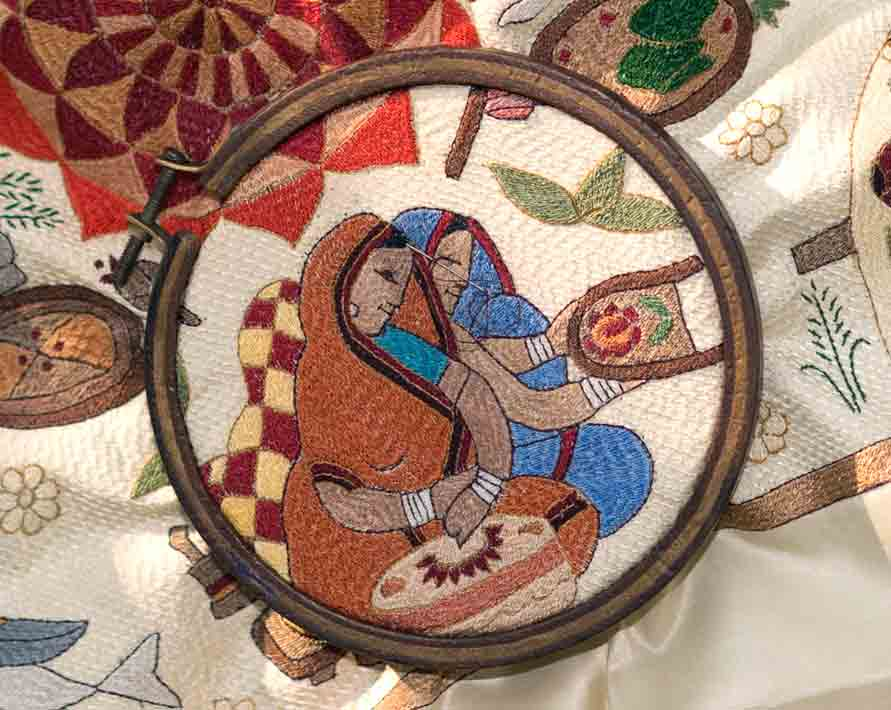

Kantha Embroidery is a traditional form of hand stitching from Eastern India and Bangladesh, primarily using layers of old saris or soft dhotis. These textiles are stitched together with colored threads pulled from the borders of the used garments. Kantha holds significant cultural value as it represents the resourcefulness and artistic expression of rural women. Traditionally made by women as a form of leisurely art or for practical purposes, it symbolizes warmth, protection, and blessings. To create this textile craft involves a simple running stitch along the edges. Artisans begin by layering several old fabrics, which are then secured together. The stitching follows intricate patterns, often inspired by nature, folklore, and everyday activities.
Taant is an Indian textile craft renowned for its weaving style, primarily involving cotton fibers. It is especially prominent in West Bengal and Bangladesh. These textiles are celebrated for their lightness and comfort, making them particularly suitable for the hot and humid climate in these regions. It is made through a detailed process of weaving, which begins with the spinning of cotton into yarn. The yarn is then dyed using traditional techniques and set up on a handloom. Weavers use a variety of weaving patterns to create distinctive motifs and borders characteristic of Taant sarees.